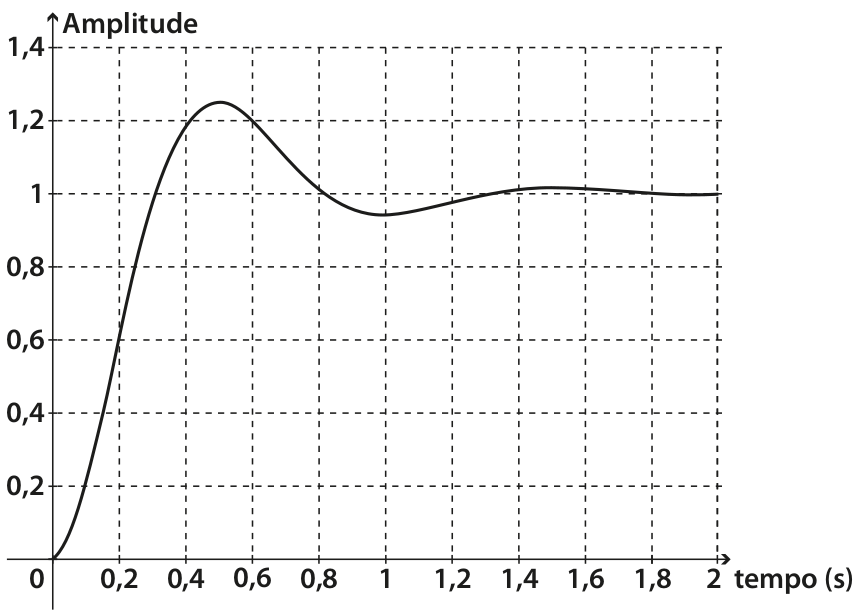

Sistemas de segunda ordem


\( \ddot{y}(t) + p \dot{y}(t) + q y(t) = K u(t) \)
\( \mathscr{L} \left[ \cdot \right] \rightarrow \left( s^2 + p \, s + q \right) Y(s) = K \, U(s)\)
\( P(s) = \frac{Y(s)}{U(s)} = \frac{K}{s^2 + p \, s + q}\)
\( P(s) = \frac{K}{s^2 + 2 \alpha s + \omega_n^2} = \frac{K}{s^2 + 2 \zeta \omega_n s + \omega_n^2} = \frac{K_g \omega_n^2}{s^2 + 2 \zeta \omega_n s + \omega_n^2} \)
Sistema superamortecido com 2 polos reais distintos
\( \alpha^2 > \omega_n^2 \) ou \( \zeta > 1 \)
Sistema com amortecimento crítico com 2 polos reais iguais
\( \alpha^2 = \omega_n^2 \) ou \( \zeta = 1 \)
Sistema subamortecido com 2 polos complexos conjugados
\( 0 < \alpha^2 < \omega_n^2 \) ou \( 0 < \zeta < 1 \)
Aproximação


Variação do grau de amortecimento \(\zeta\)

Índice de desempenho

Tempo de pico: \(t_p = \frac{\pi}{\omega_d}\) onde \(\omega_d = \sqrt{\omega_n^2 - \alpha^2} \), \(\zeta = \frac{\alpha}{\omega_n}\)
Tempo de acomodação: \(t_{ac} = \frac{4}{\alpha} \)
Tempo de subida: \(t_{s} = \frac{\pi - \phi}{\omega_d} \) onde \(\phi = \arctan \left( \frac{\omega_d}{\alpha} \right) \)
Máximo sobressinal: \(M_{p} = {\rm e}^{-\pi \left( \alpha/\omega_d \right)} = {\rm e}^{-\pi \left( \zeta / \sqrt{1 - \zeta^2} \right)} \)
Considere a função de transferência: \(P(s) = \frac{25}{s^2 + 6 s + 25}\)
Esboçe a resposta ao degrau.
A figura abaixo representa a resposta ao degrau unitário de um sistema de segunda ordem. Determine a partir do gráfico da figura: o tempo de pico; o sobressinal (em porcentagem); e o tempo de acomodação. Determine também a função de transferência.
